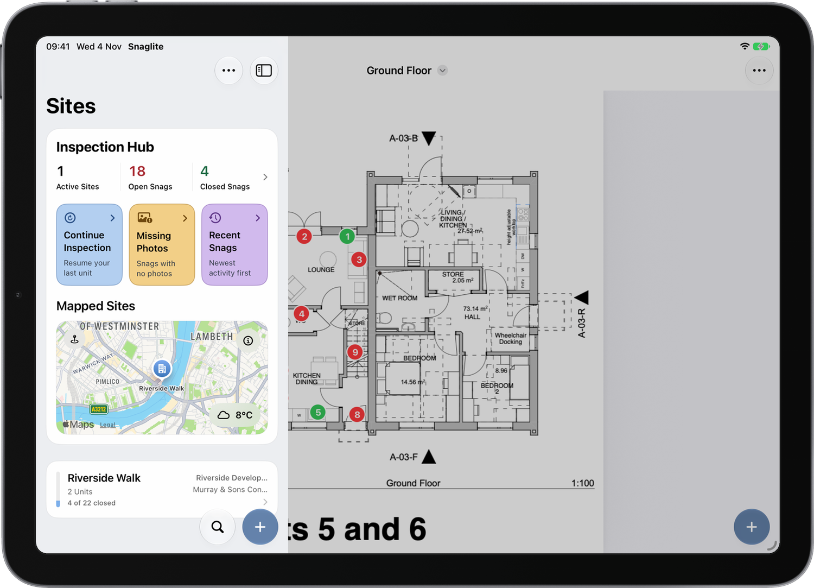
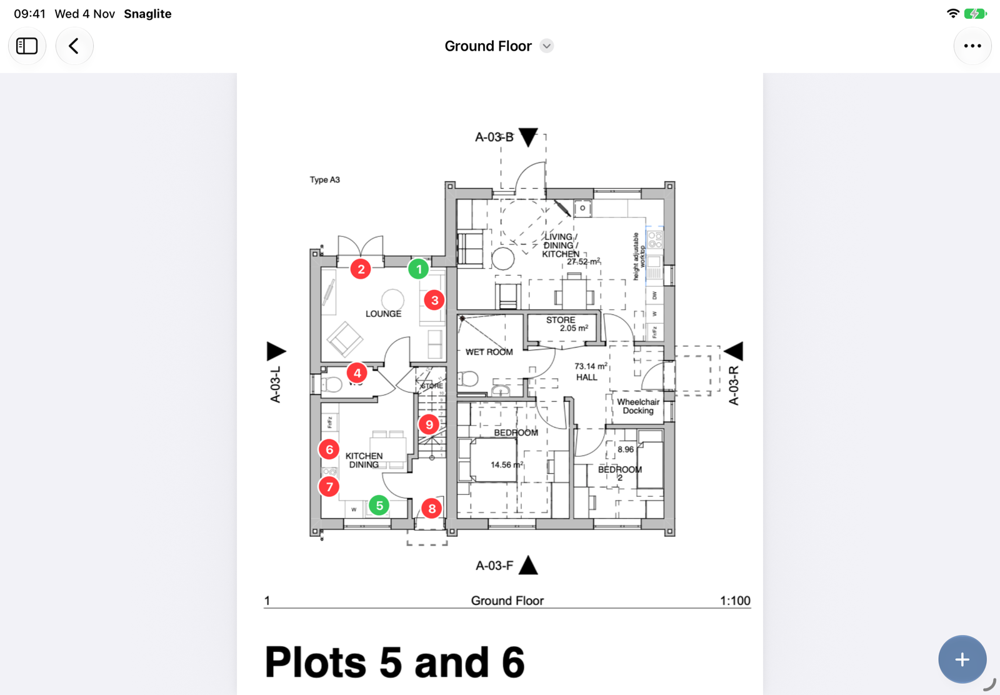
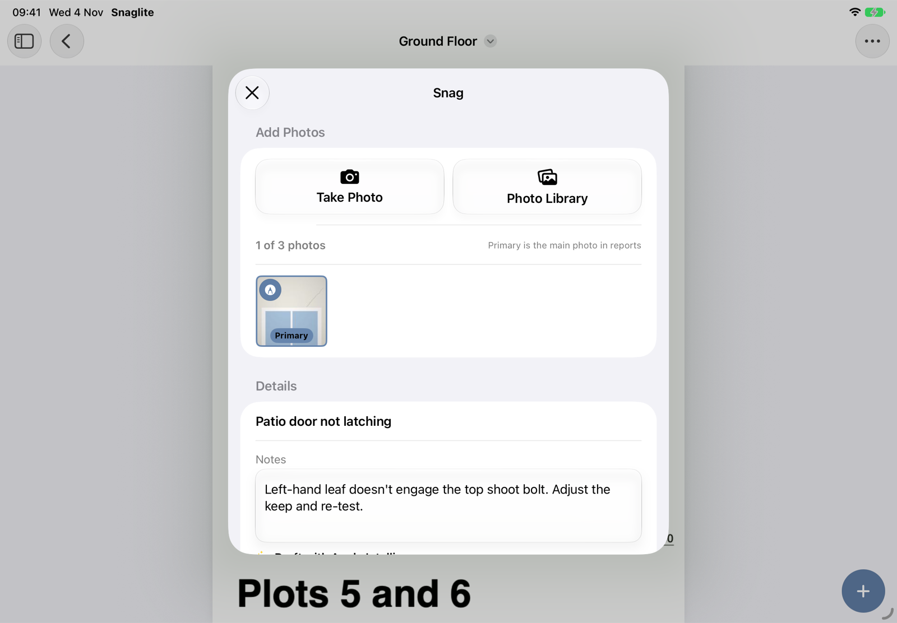
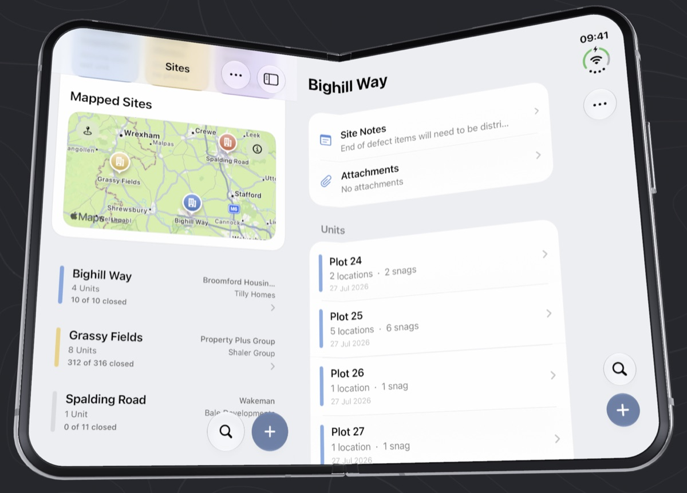
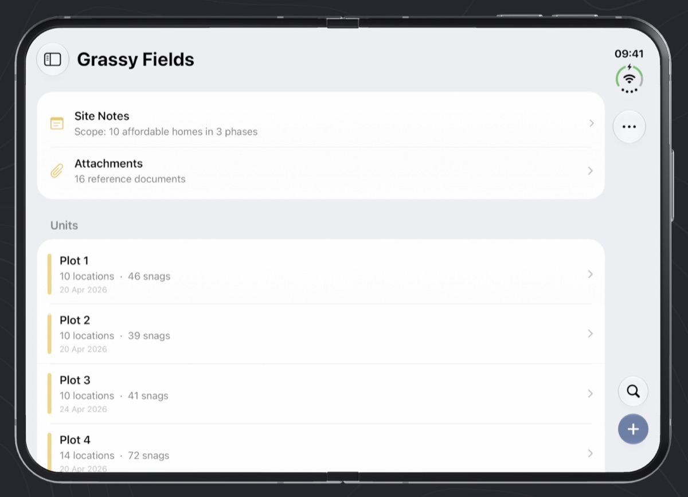

iPad and iPhone Duo NEW IN 1.1
Snaglite runs on iPad and iPhone Duo as well as iPhone. Everything in this manual works the same way. The bigger screens add room for drawings, a sidebar, and a few extras for Apple Pencil.
Your inspections sync automatically between your iPhone, iPad and iPhone Duo when they are signed in to the same Apple Account. You can walk the site with your iPhone, then review the drawings and export the report on your iPad.
iPad
The sidebar
On iPad, the Sites screen and Inspection Hub sit in a sidebar on the left, and whatever you open fills the rest of the screen. Tap the sidebar button at the top left to show or hide it. Hiding it gives drawings and reports the whole screen.

Drawings on the big screen
Drawings are much easier to read and pin on an iPad. Pins show the snag number and are coloured by status: red for open and green for closed. Tap a pin to open its snag, or tap + and then the drawing to add a new snag in that spot. See Attachments and Drawings.

Snags, notes and markup
New Snag, snag details, notes and pin placement open as page-sized sheets, so you can see what's behind them. A snag opened from a pin appears over its drawing.

Apple Pencil
- Once you draw with Apple Pencil, only the Pencil draws, so your finger can pan and zoom without leaving marks.
- An Eraser tool appears in the photo editor. If your Pencil's double-tap is set to switch to the eraser, that works too.
- Squeeze Apple Pencil Pro to bring up the tool palette next to the tip.
- Write directly on PDF drawings and attachments, as well as on photos.
More detail is in Photos and Markup.
Drag and drop
Drag images straight onto a snag to add them as photos, or drag images and PDFs into Attachments or Drawings, from Files, Photos, Mail, Safari or any other app. This works on iPhone too, but it is easiest on iPad, where Split View or Stage Manager put both apps side by side.
Keyboard
With a hardware keyboard, use ⌘B and ⌘I for bold and italic in notes, and Tab / Shift-Tab to indent list items.
iPhone Duo
On iPhone Duo, Snaglite works like an iPhone when folded and like an iPad when unfolded.
- Folded, the outer screen shows the same layout as an iPhone. Search and + sit in a strip down the side of the screen, alongside ⋯.
- Unfolded, you get the sidebar and the full-width layout, like an iPad.
- Fold or unfold at any time. Snaglite keeps your place, so the snag you're editing, any unsaved typing and an open photo editor all stay as they were.

